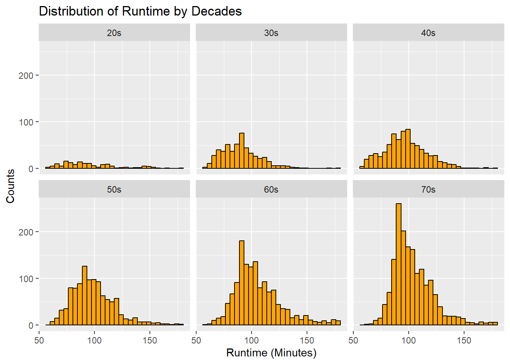
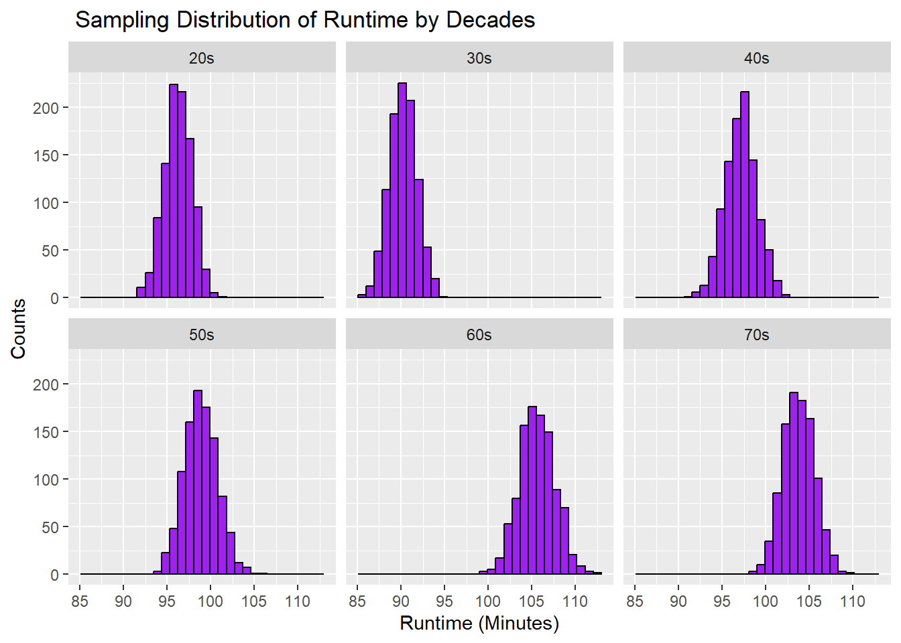

library(tidyverse)
library(mosaic)
library(radiant)
mf <- "https://raw.githubusercontent.com/difiore/ada-datasets/main/IMDB-movies.csv"
md <- read_csv(mf, col_names = TRUE)Exercise-05-Quarto-Challange-1
Exercise 05: Generate Sampling Distributions and CIs
Challenge 1
Step 1
Loading in the packages and the “IMDB-movies.csv” file that I will be using for Challange 1. I named the file md instead of d.
Step 2
I created a one-line statement to do some data wrangling while using the pipe operator:
Filtering out data that includes movies from 1920 to 1979.
Filtering out data that includes movies that are between 1 and 3 hours long.
Creating a new column that codes the startYear into a new variable “decade”
md2 <- md |>
filter(startYear >= 1920 & startYear <= 1979) |>
filter(runtimeMinutes >= 60 & runtimeMinutes <= 180) |>
mutate(decade = case_when(startYear >= 1920 & startYear <= 1929 ~ "20s",
startYear >= 1930 & startYear <= 1939 ~ "30s",
startYear >= 1940 & startYear <= 1949 ~ "40s",
startYear >= 1950 & startYear <= 1959 ~ "50s",
startYear >= 1960 & startYear <= 1969 ~ "60s",
startYear >= 1970 & startYear <= 1979 ~ "70s"))
md2# A tibble: 5,651 × 11
tconst titleType primaryTitle startYear runtimeMinutes genres averageRating
<chr> <chr> <chr> <dbl> <dbl> <chr> <dbl>
1 tt00103… movie The Cabinet… 1920 76 Fanta… 8.1
2 tt00110… movie Leaves From… 1920 167 Drama 6.7
3 tt00111… movie Dr. Jekyll … 1920 82 Drama… 7
4 tt00112… movie The Golem 1920 76 Fanta… 7.2
5 tt00113… movie The Last of… 1920 73 Actio… 6.7
6 tt00114… movie The Mark of… 1920 107 Adven… 7.1
7 tt00115… movie The Penalty 1920 90 Crime… 7.4
8 tt00116… movie The Saphead 1920 77 Comedy 6.2
9 tt00118… movie Way Down Ea… 1920 145 Drama… 7.4
10 tt00118… movie Why Change … 1920 90 Comed… 6.7
# ℹ 5,641 more rows
# ℹ 4 more variables: numVotes <dbl>, nconst <chr>, director <chr>,
# decade <chr>Step 3
Using {ggplot} I plotted histograms of the distribution of “runtimeMinutes” for each “decade.” I was not sure what our y-axis should be so I left it as counts/frequency (vs density).
md2_p <- ggplot(md2, aes(x = runtimeMinutes)) +
geom_histogram(color="black", fill="orange") +
facet_wrap(~decade, ncol = 3) +
labs(x = "Runtime (Minutes)", y = "Counts", title = "Distribution of Runtime by Decades")
md2_p
Step 4
I created a one-line statement to calculate the:
population mean
population standard deviation (SD)
This was done for “runtimeMinutes” for each “decade” and then was saved in a new dataframe called population_results. I used the function sdpop() function from the {radiant} package to calculate the standard deviation (SD) for the population.
population_results <- md2 |>
group_by(decade) |>
summarize(meanRTMpopulation = mean(runtimeMinutes, na.rm = TRUE),
sdRTMpopulation = sdpop(runtimeMinutes, na.rm = TRUE))
population_results# A tibble: 6 × 3
decade meanRTMpopulation sdRTMpopulation
<chr> <dbl> <dbl>
1 20s 96.3 26.1
2 30s 90.3 17.3
3 40s 97.2 19.1
4 50s 98.9 19.2
5 60s 106. 21.2
6 70s 104. 18.0Step 5
I single sampled 100 movies without replacement from the original data set and for each decade using the slice_sample() function. I then calculated the:
single sample mean
single sample standard deviation
This was done for the “runtimeMinutes” for each “decade.” I also created a new dataframe called mdsample. Values for the mean and standard deviation are always changing every time you run the code since it’s taking a new sample. So, I ended up splitting the mode into two chunks so I can work with the same numbers. I couldn’t set the set.seed() function to work.
md_sample <- md2 |>
group_by(decade) |>
slice_sample(n = 100, replace = FALSE)
md_sample# A tibble: 600 × 11
# Groups: decade [6]
tconst titleType primaryTitle startYear runtimeMinutes genres averageRating
<chr> <chr> <chr> <dbl> <dbl> <chr> <dbl>
1 tt00129… movie Blood and S… 1922 80 Drama… 6.4
2 tt00179… movie The General 1926 67 Actio… 8.1
3 tt00185… movie Wings 1927 144 Actio… 7.5
4 tt00139… movie The Faithfu… 1923 87 Drama… 7.5
5 tt00173… movie The Scarlet… 1926 115 Drama 7.7
6 tt00198… movie Desert Nigh… 1929 62 Adven… 6.5
7 tt00187… movie Pandora's B… 1929 109 Crime… 7.9
8 tt00204… movie Spite Marri… 1929 76 Comedy 7
9 tt00194… movie Steamboat B… 1928 70 Actio… 7.9
10 tt00126… movie The Sheik 1921 86 Adven… 6.4
# ℹ 590 more rows
# ℹ 4 more variables: numVotes <dbl>, nconst <chr>, director <chr>,
# decade <chr>md_sampleMSD <- md_sample |>
group_by(decade) |>
summarize(meanRTMsample = mean(runtimeMinutes, na.rm = TRUE),
sdRTMsample = sd(runtimeMinutes, na.rm = TRUE))
md_sampleMSD# A tibble: 6 × 3
decade meanRTMsample sdRTMsample
<chr> <dbl> <dbl>
1 20s 94.4 25.8
2 30s 92.0 19.3
3 40s 95.5 17.5
4 50s 100. 21.9
5 60s 106. 20.5
6 70s 102. 15.5Step 6
I calculated the estimated standard error (SE) for the single sample of “runtimeMinutes” I took above in Step 5. This was based on the standard deviation and the sample size (n=100).
md_sampleSEM <- md_sample |>
group_by(decade) |>
summarize(semRTMsample = sd(runtimeMinutes, na.rm = TRUE) / sqrt(length(runtimeMinutes)))
md_sampleSEM# A tibble: 6 × 2
decade semRTMsample
<chr> <dbl>
1 20s 2.58
2 30s 1.93
3 40s 1.75
4 50s 2.19
5 60s 2.05
6 70s 1.55Step 7
I first calculated the standard error (SE) for the entire population.
md_populationSEM <- md2 |>
group_by(decade) |>
summarize(semRTMpopulation = sd(runtimeMinutes, na.rm = TRUE)/sqrt(length(runtimeMinutes)))
md_populationSEM# A tibble: 6 × 2
decade semRTMpopulation
<chr> <dbl>
1 20s 2.13
2 30s 0.751
3 40s 0.684
4 50s 0.584
5 60s 0.570
6 70s 0.433I then created a new table using the innerjoin() function so we could compare the means, standard deviation (SD), and the standard error (SE) of the sample we took and the entire population.
sample_population_comparison <- population_results |>
inner_join(md_populationSEM, by = "decade") |>
inner_join(md_sampleMSD, by = "decade") |>
inner_join(md_sampleSEM, by = "decade")
sample_population_comparison# A tibble: 6 × 7
decade meanRTMpopulation sdRTMpopulation semRTMpopulation meanRTMsample
<chr> <dbl> <dbl> <dbl> <dbl>
1 20s 96.3 26.1 2.13 94.4
2 30s 90.3 17.3 0.751 92.0
3 40s 97.2 19.1 0.684 95.5
4 50s 98.9 19.2 0.584 100.
5 60s 106. 21.2 0.570 106.
6 70s 104. 18.0 0.433 102.
# ℹ 2 more variables: sdRTMsample <dbl>, semRTMsample <dbl>Step 8
I attempted to create a sampling distribution of mean “runtimeMinutes” for each “decade”:
I drew 1000 random samples of 100 movies from each decade, without replacement
Then for each sample I calculated the mean and standard deviation (SD) for “runtimeMinutes” for each decade.
random_sample <- 1000 sample_size <- 100 s <- list() #dummy variable to hold the samples for (i in 1:random_sample) { s[[i]] <- md2 |> #md2 original table with decades column group_by(decade) |> slice_sample(n = sample_size, replace = FALSE) |> # used slice_sample for datatables group_by(decade) |> summarize(meanRTMsampledis = mean(runtimeMinutes, na.rm = TRUE), sdRTMsampledis = sd(runtimeMinutes, na.rm = TRUE)) } combined_sample_distribution <- bind_rows(s) #combined everything into one datatable combined_sample_distribution# A tibble: 6,000 × 3 decade meanRTMsampledis sdRTMsampledis <chr> <dbl> <dbl> 1 20s 94.5 25.0 2 30s 92.9 18.0 3 40s 99.6 19.9 4 50s 96.4 17.6 5 60s 104. 21.0 6 70s 103. 16.4 7 20s 97.5 26.9 8 30s 90.9 15.5 9 40s 98.0 19.8 10 50s 98.2 18.2 # ℹ 5,990 more rows
Step 9
I then calculated the mean and and the standard deviation (SD) of the sampling distribution of the sample means for each “decade.”
mean: should be a good estimate of the population mean
standard deviation (SD): estimate of the standard error of the population
sample_distributionMSD <- combined_sample_distribution|> # using the combined table above group_by(decade) |> summarize(meanRTMcombinedsampledis = mean(meanRTMsampledis, na.rm = TRUE), sdRTMcombinedsampledis = sd(meanRTMsampledis, na.rm = TRUE)) sample_distributionMSD# A tibble: 6 × 3 decade meanRTMcombinedsampledis sdRTMcombinedsampledis <chr> <dbl> <dbl> 1 20s 96.3 1.59 2 30s 90.2 1.55 3 40s 97.2 1.83 4 50s 98.9 1.88 5 60s 106. 2.04 6 70s 104. 1.81
I then plotted a histogram of the sampling distribution for each “decade.” Now each “decade” has normal distribution bell shape.
combined_sample_distribution_p <-
ggplot(combined_sample_distribution, aes(x = meanRTMsampledis)) +
geom_histogram(color="black", fill="purple") +
facet_wrap(~decade, ncol = 3) +
labs(x = "Runtime (Minutes)", y = "Counts", title = " Sampling Distribution of Runtime by Decades")
combined_sample_distribution_p
Step 10
I compared the standard errors (SE) “runtimeMinutes” for each “decade” for:
SE for the first sample of 100 movies
SE for the known population
SE for the sampling distribution of sample means
#this first part is just creating the SE for the sampling distribution
sample_distributionSEM <- combined_sample_distribution|>
group_by(decade) |>
summarize(sdRTMcombinedsampledis = sd(meanRTMsampledis, na.rm = TRUE))
standard_error_comparison <- md_sampleSEM |>
inner_join(md_populationSEM, by = "decade") |>
inner_join(sample_distributionSEM, by = "decade")
standard_error_comparison# A tibble: 6 × 4
decade semRTMsample semRTMpopulation sdRTMcombinedsampledis
<chr> <dbl> <dbl> <dbl>
1 20s 2.58 2.13 1.59
2 30s 1.93 0.751 1.55
3 40s 1.75 0.684 1.83
4 50s 2.19 0.584 1.88
5 60s 2.05 0.570 2.04
6 70s 1.55 0.433 1.81